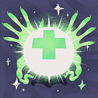

Helden › Assassine
Calico
Calico ist ein spielbarer Held in Deadlock. Die ehemalige Monsterjägerin arbeitet heute als gefragte Auftragskillerin: Aus den Schatten heraus erledigt sie ihre Ziele eines nach dem anderen — gern in Gestalt ihrer Katze Ava.
Hintergrund
Einst ein dekoriertes Mitglied der Baxter Society, verließ Calico den ehrwürdigen Orden, als ihr klar wurde: Monster umsonst zu töten ist deutlich weniger profitabel, als Menschen für Geld zu töten.
Heute ist Calico eine gefragte Auftragsmörderin — und lebt ihr bestes Leben, während sie das von anderen beendet.
Spielstil
Calico nutzt die Schatten zu ihrem Vorteil: Sie gleitet in den Kampf hinein und wieder hinaus und jagt ihre Gegner einen nach dem anderen. Gloom Bombs weichen das Ziel auf, Leaping Slash vollendet — und wenn es brenzlig wird, verschwindet sie als Ava in der Dunkelheit.
Fähigkeiten
Gloom Bombs
Taste 1Wirft ein Bündel Bomben mit verzögerter Detonation — Geist-Schaden; Mehrfachtreffer am selben Ziel zählen reduziert.
Abklingzeit: 14 s
Leaping Slash
Taste 2Dash nach vorn mit anschließendem Rundumhieb; trifft sie mindestens einen Helden, heilt sich Calico ein wenig.
Abklingzeit: 13 s
Ava
Taste 3Wird zu Schatten und fährt in die Katze Ava: stetig wachsendes Bewegungstempo und unsichtbar auf der Minimap.
Abklingzeit: 30 s
Return to Shadows
Taste 4 UltimateVerwandelt sich augenblicklich in Schatten — untargetbar, schneller, mit Geist-Schaden beim Ab- und Wiederauftauchen.
Abklingzeit: 115 s
Basiswerte
| Wert | Basis (Stufe 1) | Kategorie |
|---|---|---|
| Maximale Gesundheit | 730 | Vitalität |
| Gesundheitsregeneration | 2 / s | Vitalität |
| Lauftempo | 6,8 m/s | Bewegung |
| Sprint-Bonus | +1,6 m/s | Bewegung |
| Ausdauer | 3 | Bewegung |
| Leichter Nahkampfschaden | 63 | Waffe |
| Schwerer Nahkampfschaden | 116 | Waffe |
Beliebte Builds
Diese Daten stammen direkt aus dem Build-Browser im Spiel: die drei meistfavorisierten Builds für Calico, sortiert nach der Zahl der Spieler, die sie gespeichert haben. Klick einen Build an, um die Item-Reihenfolge zu sehen.
№1 I love cat[girl]s! Skelly's Spirit Assassin Build 32.387 Favoriten
„Fully annotated! This is a spirit build! Still testing new AP order. Check out my melee bruiser Calico build: 209974“





№2 I love cat[girl]s! Skelly's Spirit Assassin Build 32.205 Favoriten
„Fully annotated! This is a spirit build! Still testing new AP order. Check out my melee bruiser Calico build: 209974“
№3 I love cat[girl]s! Skelly's Spirit Assassin Build 31.988 Favoriten
„Fully annotated! This is a spirit build! Still testing new AP order. Check out my melee bruiser Calico build: 209974“
Warum sind das die besten Builds?
Die drei Builds wurden zusammen über 96.580-mal von Spielern gespeichert — Favoriten sind das stärkste Qualitätssignal im Build-Browser, denn ein Build, den so viele Spieler über Monate und Patches hinweg behalten, hat sich in echten Matches bewährt. Auffällig ist der hohe Anteil an Vitalitäts-Items: Calico steht mitten im Gefecht — jede Sekunde, die der Held länger lebt, ist gewonnener Schaden und Raum fürs Team. Als Einstieg gilt: Folge der Item-Reihenfolge des №1-Builds Kategorie für Kategorie und passe erst mit wachsender Erfahrung an dein Matchup an.
Trivia
- Calicos interner Klassenname in den Spieldaten lautet
hero_nano. - Die Spieldaten führen den Helden mit den Tags Tricksy, Slippery, Burst Damage.
- Die Einstiegskomplexität liegt bei 2 von 3 — Kategorie „Fortgeschritten“.